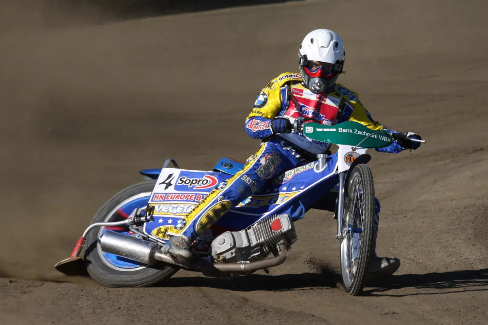

Tomasz Gollob - Niezapomniana Legenda Polskiego Żużla
Urodzony: 11 kwietnia 1971, Bydgoszcz
Narodowość: Polska
Kariera: Startował od 1988 do 2017 roku. Większość kariery spędził w Polonii Bydgoszcz, a także reprezentował inne kluby, m.in. Stal Gorzów.
Życiorys i Najważniejsze Osiągnięcia
Tomasz Gollob to bez wątpienia jeden z najwybitniejszych, jeśli nie najwybitniejszy, polski żużlowiec w historii. Jego kariera trwała blisko 30 lat i obfitowała w niezliczone sukcesy, które na zawsze wpisały się w historię "czarnego sportu".
Indywidualny Mistrz Świata (2010)
Największym marzeniem Golloba i polskich kibiców było zdobycie tytułu Indywidualnego Mistrza Świata. Po latach prób, wielu medalach (sześć srebrnych i trzy brązowe medale MŚ przed 2010 rokiem) i dramatycznych momentach, marzenie to spełniło się w 2010 roku. Tomasz Gollob, w wieku 39 lat, w spektakularnym stylu sięgnął po złoto, stając się narodowym bohaterem i udowadniając, że nigdy nie należy się poddawać.
Wielokrotny Mistrz Polski
Na krajowym podwórku Gollob był absolutnym dominatorem. Zdobył 8 tytułów Indywidualnego Mistrza Polski (1992, 1993, 1994, 1995, 1997, 2002, 2006, 2009), co czyni go rekordzistą pod względem liczby zdobytych złotych medali.
Sukcesy Drużynowe i Reprezentacyjne
Tomasz Gollob był również kluczową postacią polskiej reprezentacji. Wielokrotnie zdobywał Drużynowy Puchar Świata (wówczas Speedway World Cup) z reprezentacją Polski (m.in. 2005, 2007, 2009, 2010, 2011). Z Polonią Bydgoszcz, swoim macierzystym klubem, zdobywał wielokrotnie Drużynowe Mistrzostwo Polski.
Styl Jazdy i Charakter
Gollob był znany z niezwykle widowiskowego i agresywnego stylu jazdy. Jego brawurowe ataki na pierwszym łuku, umiejętność jazdy w kontakcie z rywalami i niezłomna wola walki sprawiały, że każdy jego występ był niezapomniany. Był również perfekcjonistą w kwestii sprzętu, spędzając wiele godzin na testach i ustawieniach motocykla.
Pożegnanie z Torem i Tragiczny Wypadek
Karierę sportową Tomasza Golloba przerwał tragiczny wypadek na motocrossie w 2017 roku, w wyniku którego doznał poważnych obrażeń kręgosłupa i stracił czucie w nogach. Mimo to, Gollob z niezwykłą determinacją walczy o powrót do sprawności, stając się inspiracją dla wielu ludzi.
Tomasz Gollob pozostaje ikoną polskiego sportu i jednym z najbardziej rozpoznawalnych żużlowców na świecie. Jego dziedzictwo na zawsze pozostanie w pamięci kibiców.